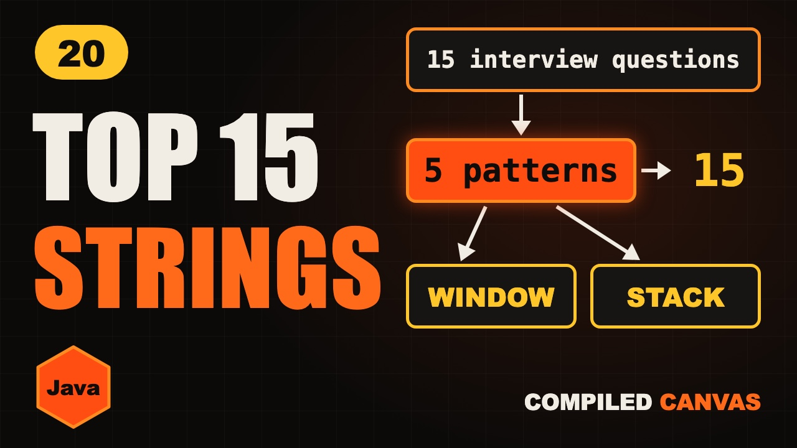

Top 15 String Interview Questions in Java | 5 Patterns

The video goes live on 23 Nov 2026 at 6:00 PM IST. The notes are ready now.
?What this episode covers
String questions look endless, but almost all of them use five patterns: two pointers, counting with an int[26], sliding windows, stacks, and building or expanding from a centre.
This episode goes through fifteen top questions grouped by pattern, from reverse string and valid palindrome, through valid anagram, ransom note and group anagrams, to longest substring without repeating characters, minimum window substring, valid parentheses, longest common prefix, string compression and longest palindromic substring.
We finish with how to pick a pattern for a new question: both ends means two pointers, which letters means counting, the longest or smallest substring means a window, and brackets or pairs mean a stack.
◎What you'll be able to do
- Two pointers
- Counting
- Sliding window
- Stack
- Build and expand
{ }The Java code from the video
Type it out yourself, or copy it. Each file runs on its own with java FileName.java and prints the examples from the video.
import java.util.*;
// Episode 20: three of the top string questions, one per pattern. Run: java StringPatterns.java
public class StringPatterns {
// LeetCode 3, sliding window: jump the left edge past a repeated letter
static int lengthOfLongestSubstring(String s) {
int[] last = new int[128];
Arrays.fill(last, -1);
int best = 0, left = 0;
for (int r = 0; r < s.length(); r++) {
char c = s.charAt(r);
left = Math.max(left, last[c] + 1);
last[c] = r;
best = Math.max(best, r - left + 1);
}
return best;
}
// LeetCode 20, stack: push the closing bracket you expect next
static boolean isValid(String s) {
Deque<Character> st = new ArrayDeque<>();
for (char c : s.toCharArray()) {
if (c == '(') st.push(')');
else if (c == '{') st.push('}');
else if (c == '[') st.push(']');
else if (st.isEmpty() || st.pop() != c) return false;
}
return st.isEmpty();
}
// LeetCode 5, expand from every centre (odd and even)
static String longestPalindrome(String s) {
int start = 0, len = 0;
for (int c = 0; c < s.length(); c++) {
for (int k = 0; k < 2; k++) {
int l = c, r = c + k;
while (l >= 0 && r < s.length() && s.charAt(l) == s.charAt(r)) { l--; r++; }
if (r - l - 1 > len) { len = r - l - 1; start = l + 1; }
}
}
return s.substring(start, start + len);
}
public static void main(String[] args) {
System.out.println(lengthOfLongestSubstring("abcabcbb")); // 3
System.out.println(isValid("({[]})")); // true
System.out.println(isValid("(()]")); // false
System.out.println(longestPalindrome("babad")); // bab
}
}!The mistake to watch for
Memorizing answers instead of spotting the pattern first.
✦Key moments tap one to jump there
↗Full transcript
Read the whole lesson
String questions look endless. Reverse this, count that, find the longest something.
But just like arrays, almost all of them use a handful of patterns. Learn the five, and you can solve most of them.
Here are fifteen top string questions, grouped by pattern, with the one idea that cracks each one.
Welcome back to Compiled Canvas. This is Episode Twenty of our DSA series. Last time, we learned Rabin-Karp and the Z algorithm.
Here's the plan. First, two pointers. Then counting. Then sliding windows. Then the stack. And then build and expand. A cheat sheet. And an easy quiz at the end.
Let's go.
Pattern one is two pointers, from both ends.
Question one. Reverse a string in place. Swap the two ends, and move inward.
Question two. Valid palindrome. Compare both ends, skipping anything that isn't a letter or digit.
Question three. Reverse the words in a sentence. Split on spaces, then build it back from the last word.
Pattern two is counting, with an array of twenty six.
Question four. Valid anagram. Add for one word, subtract for the other, and check for all zeros.
Question five. First unique character. Count everything, then walk again and return the first count of one.
Question six. Ransom note. Can you build one word from the letters of a magazine? Count the magazine, then spend letters on the note.
Question seven. Group anagrams. Use the sorted letters as the key in a hash map.
Pattern three is the sliding window. It's for anything in a row, a substring.
Question eight is the most famous one. The longest substring without repeating characters, LeetCode three.
Remember where each letter was last seen. When a letter repeats inside the window, jump the left edge past it.
Keep the biggest window you've seen. Each letter is visited once, so it's O of n.
Question nine. Is any arrangement of one word hiding in another? Slide a window of the same length, and compare letter counts.
Question ten. The smallest window that holds every letter of a word. Grow the right side until it's valid, then shrink the left as far as you can.
Quick pause, before we go further. If you're finding this video valuable, hit subscribe to Compiled Canvas, and turn on the bell. It's free, it takes one second, and it helps me keep making this complete DSA series for you. Alright, back to it.
Pattern four is the stack. Use it when the latest thing you saw must be matched or cancelled first.
Question eleven. Valid parentheses. Push every opening bracket. On a closing one, the top of the stack must be its partner.
Question twelve. Remove adjacent duplicates. If the next letter equals the top of the stack, pop it. Otherwise, push it.
Pattern five is building and expanding. Use a string builder, or grow outwards from a centre.
Question thirteen. Longest common prefix. Compare the words column by column, and stop at the first difference.
Question fourteen. String compression. Count each run of the same letter, and write the letter and its count.
Question fifteen. Longest palindromic substring. Stand at every centre, and expand outwards while both sides match.
So when you meet a new string question, ask these in order. Does it compare both ends? Two pointers.
Is it about which letters, and how many? Count them.
Is it the longest or smallest substring? Sliding window. Brackets, or cancelling pairs? A stack.
Your turn. Pause. Check if every bracket in a string is closed in the right order. Which pattern?
A stack. The latest opening bracket must be closed first.
So, here's the whole thing in one cheat sheet. Pause and screenshot this.
Both ends: two pointers.
Which letters: an array of twenty six.
Same letters, any order: sorted key.
Substring: sliding window.
Brackets and pairs: a stack.
Palindromic substring: expand from the centre.
Okay, quiz time. Three easy questions. Pause the video, think, and then hit play.
Question one. Longest substring without repeats. Which pattern?
Question two. Valid parentheses. Which pattern?
Question three. What's the longest substring without repeats in a b c a b c b b?
Ready?
Question one: Sliding window.
Question two: A stack.
Question three: Three, like a b c.
How many did you get right? Tell me in the comments: three out of three, two, or one.
Let's recap. Don't memorize questions. Learn the five patterns. Count with twenty six slots. Slide a window over substrings. Stacks cancel pairs.
Your homework. Pick one question from each pattern, and solve it without looking. Start with LeetCode three, longest substring without repeating characters. Then twenty, valid parentheses. And then five, longest palindromic substring. Hints and Java answers are on compiled canvas dot com.
Next episode, we start searching. Linear search versus binary search, and why one is so much faster.
And don't forget to subscribe to Compiled Canvas, so you don't miss anything new in tech and the job market. Keep coding, stay consistent, and I'll see you in the next one.